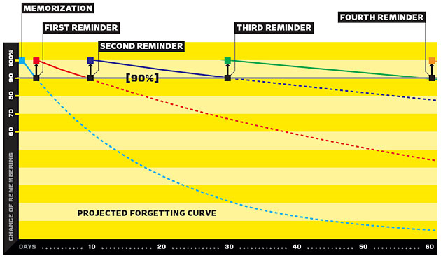
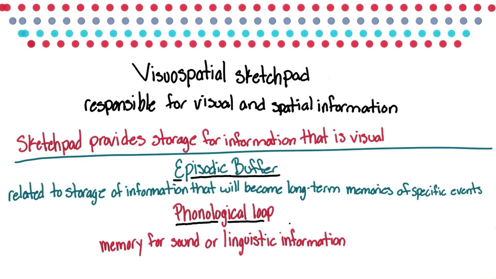
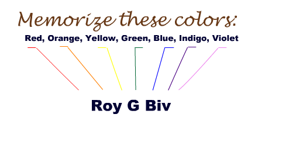

| github.io | Learning Helper |
| differencebetween.net | Put your memory to work |
| quebecoislibre.org | Personal Flourishing and Happiness: A Case for the Minimal State |
| crew.co | Difference Between Stimulus and Response |
| xmind.net | Mind mapping tool: XMind |
| explorable.com | Priming A person who sees the word "yellow" will be slightly faster to recognize the word "banana" |
| wikipedia.org | Thin slicing Ability to draw to conclusions in the emotions and attitudes in less than 5 minutes |
| flashcardlearner.com flashcardlearner.com | Forgetting Curve and Spacing Effect  |
| ankisrs.net ankisrs.net | Space Repetition based learning tool: Anki and its decks |
| wikipedia.org | Physical action that is occurring due to interference of Unconsciousness: Freudian slip |
| truth-code.com truth-code.com truth-code.com truth-code.com truth-code.com | 6 Signs You’re Arguing With A Psychopath 7 Hobbies That Make You Smarter 10 Traits of Genuinely Smart People 25 Mind Blowing Psychology Quotes From Carl Jung 18 Quotes That Will Change The Way You Treat Yourself |
| psychologydictionary.org | VisuoSpatial Scratchpad and Working Memory  |
| google.com | Computer file name uppercase or lowercase |
| cam.ac.uk | A Picture is worth a thousand words |
| studygs.net | Memorizing using Acronyms  |
| studygs.net | Style Points for Writing |
| wikipedia.org | Internal Monologue's restriction in accumulative learning |
| jamesclear.com | The Ivy Lee Method: the daily routine recommend for Peak Productivity |
| wikipedia.org | List of cognitive biases |
| omnilist.com | 12 useful psychological life hacks |
| psychologytoday.com edpsycinteractive.org | The Psychology of Feedback |
| slideshare.com | Aversive Feedback to Motivate Behaviour Change |